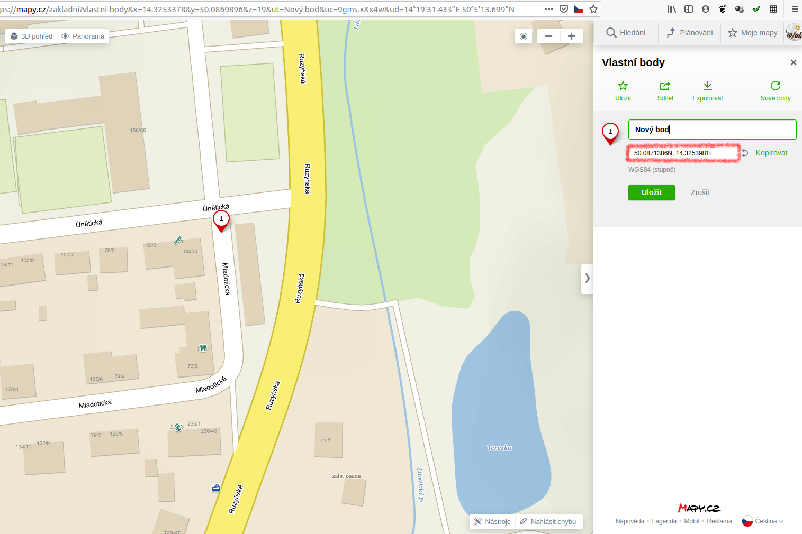
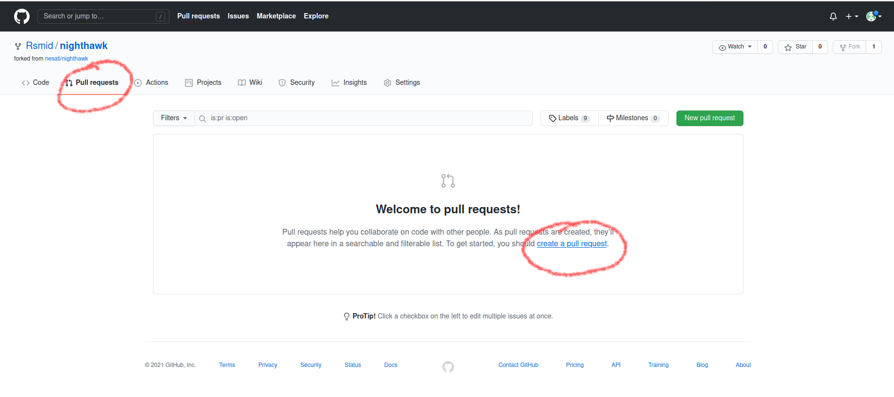
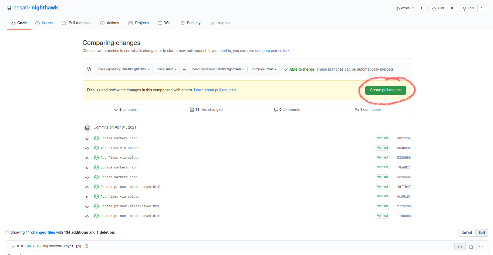

- Na stánce projektu na GitHubu vytvořte fork (registrujte se třeba školním G účtem) → vpravo nahoře tlačítkem "Fork".
- Lze přidávat libovolné množsví fotek k jedomu místu, fotky se ukládají do složky
/img vašeho forku ve formátu .jpg a se stejným poměrem stran, snažte se omezit jejich velikost na stovky kB (využijte např. nástroj RIOT), v GIMPu (nebo jiném fotoeditoru) můžete doupravit perspektivu (nechte si fotky překrýt nastavením krytí horní vrstvy, měly by se překrývat více než dva zachované body). Po nahrání přes "Add file" (Vpravo nad seznamem souborů - nejdříve otevřete složku img) si zapamatujte (nebo zapište) názvy souborů - včetně přípony .jpg.
- Pro generování souborů, které je potřeba nahrát, je připraven formulář, který výsledný formát vygeneruje za vás.
- Místa se přidávají do souboru markers.json v jednoduchém formátu
- Zeměpisné souřadnice,
- název místa/pohledu,
- název souboru s popisem.

- Vytvořte ve složce "places" soubor s názvem uvedeným v "desc" v souboru markers.json (Můžete si ho vytvořit ve svém oblíbeném editoru a nahrát nebo ho vytvořit přímo na GitHubu. Můžete začít zkopírováním souboru vzorove-misto.html, soubor má tyto dvě části:
- Skript, který se stará o fotografie - je potřeba mu vyplnit všechny nahrané fotky a napsat, které dvojice se mají porovnávat... Vlastní fotka je ve vzorovém místě ta třetí (odkaz je mailto:...),
- Popis místa. Můžete do něj napsat úplně cokoli, případně i (znovu) zobrazit konkrétní fotky bez porovnání, odkazy atd. Vše v klasickém HTML. Ve vzoru reprezentováno jen jedním odstavcem od <p> do </p>.
<script>
function init() {
const img1 = {
"url": "img/prvni-obrazek.jpg",
"year": "rok pořízení" nebo číslo roku bez uvozovek,
"attribution": "<a href='https://www.zdroj.obrazku/adresa'>Název zdroje</a>"
}
const img2 = {
"url": "img/druhy-obrazek.jpg",
"year": "rok pořízení" nebo číslo roku bez uvozovek,
"attribution": "<a href='https://www.zdroj.obrazku/adresa'>Název zdroje</a>"
}
const img3 = {
"url": "img/treti-obrazek.jpg",
"year": 2020,
"attribution": "<a href='mailto:mail@gjk.cz'>Jméno nebo pseudonym</a>"
}
compare(img1, img2)
compare(img2, img3)
}
init();
</script>
<p>
Popis vzorového místa. (Je nutné opakovat zadání?)
</p>
Posledním krokem je pak Pull-request

